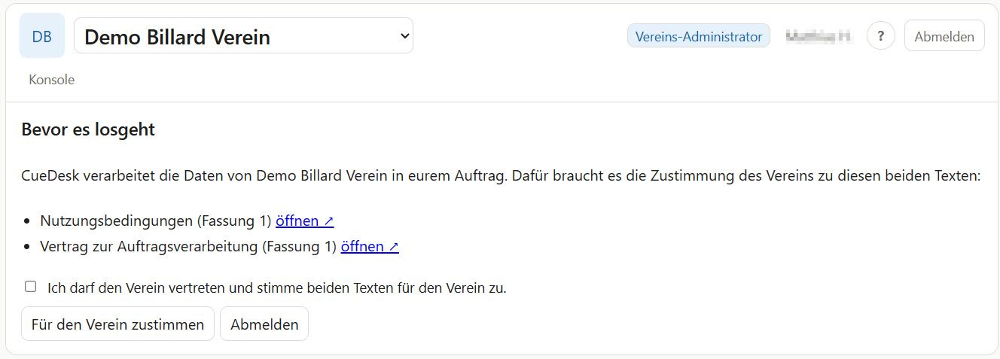
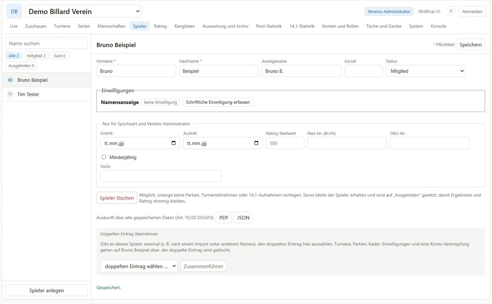

Turnierleitung
Ein Notebook oder PC. Zur Not geht es auch am Tablet.
Ihr braucht keine Software zu installieren und keinen Server zu betreiben. Ein Vereins-Administrator richtet CueDesk einmal ein, danach laufen Turniere, Liga und Tablets ohne weitere Einstellungen.
Schreibt über das Kontaktformular, welcher Verein ihr seid und wer die Einrichtung übernimmt.
Euer Verein bekommt einen eigenen, von allen anderen getrennten Bereich. Euer Vereins-Administrator erhält eine Einladung per E-Mail.
Beim ersten Aufruf stimmt der Vereins-Administrator für den Verein den Nutzungsbedingungen und dem Vertrag zur Auftragsverarbeitung zu.
Vereinsname und Logo, Vorgaben für Turniere, Spieler anlegen, Konten einladen, Tische anlegen und Tablets koppeln. Eine Anleitung führt durch jeden Punkt.
Das erste Turnier anlegen. Der grüne Knopf zeigt jeweils den nächsten Schritt.


CueDesk läuft in jedem aktuellen Browser. Spezielle Geräte sind nicht nötig.
Ein Notebook oder PC. Zur Not geht es auch am Tablet.
Je Tisch ein Tablet mit Browser, zum Beispiel ein iPad oder ein Android-Tablet. Ohne Tablets tragt ihr die Ergebnisse von Hand ein. CueDesk ist ideal für Vereine mit 3 bis 8 Tischen.
Ein Fernseher mit Browser oder angeschlossenem Rechner zeigt die TV-Ansicht mit allen Tischen.
WLAN im Vereinsheim, notfalls ein mobiler Router. Die Scoreboards zählen bei einem Aussetzer weiter.
Ein Vereins-Administrator, der einrichtet, Konten vergibt und Ansprechpartner ist.
Die Nutzung ist kostenlos. Es gibt kein Abo, keine Werbung und keine versteckten Kosten.
Der Verein ist für die Daten seiner Spieler verantwortlich, CueDesk verarbeitet sie in seinem Auftrag. Dafür gibt es einen Vertrag zur Auftragsverarbeitung.
Gespeichert werden Namen, Ergebnisse und was für den Spielbetrieb nötig ist. Keine Anschrift, kein Geburtsdatum, keine Bankdaten.
Die Datenbank liegt bei Supabase in der Region Frankfurt. Jede Woche wird eine verschlüsselte Sicherung angelegt.
Jeder Verein sieht nur seine eigenen Daten. Das regelt die Datenbank selbst, nicht nur die Oberfläche. Auch der Betreiber sieht Vereinsdaten nur, wenn der Verein einen befristeten Support-Zugang freigibt.
Auf öffentlichen Seiten, etwa dem Live-Link, erscheinen Namen nur mit Einwilligung, sonst ein Kürzel. Konten für Minderjährige gibt es nur mit Einwilligung der Erziehungsberechtigten.
Der Vereins-Administrator kann alle Vereinsdaten jederzeit als Datei herunterladen. Mitglieder laden ihre eigenen Daten selbst herunter.
Der Verein kann die Nutzung jederzeit beenden. Vorher zieht ihr einen Export; danach werden die Daten gelöscht.
Die verbindlichen Regeln stehen in den Nutzungsbedingungen, dem Vertrag zur Auftragsverarbeitung und der Datenschutzerklärung.
CueDesk ist kein Unternehmen, sondern ein privates Projekt aus dem Vereinsleben. Es wird laufend weiterentwickelt, auch mit Anregungen der Vereine.
Der Betrieb soll störungsfrei laufen, eine bestimmte Verfügbarkeit wird aber nicht zugesagt. Fällt das Internet aus, zählen die Scoreboards weiter, Ergebnisse tragt ihr dann von Hand nach.
Schreibt uns, wer ihr seid. Den Rest klären wir zusammen.